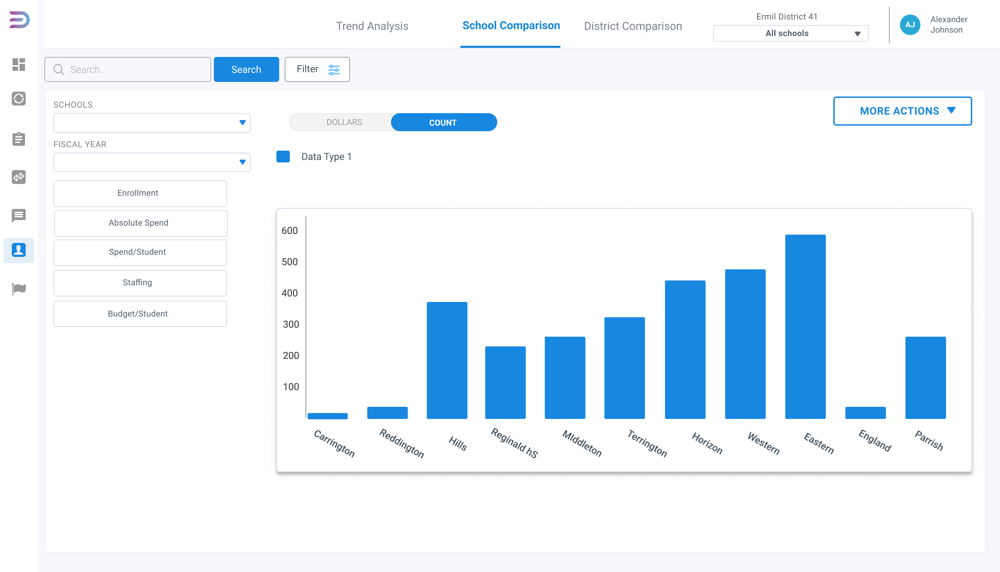
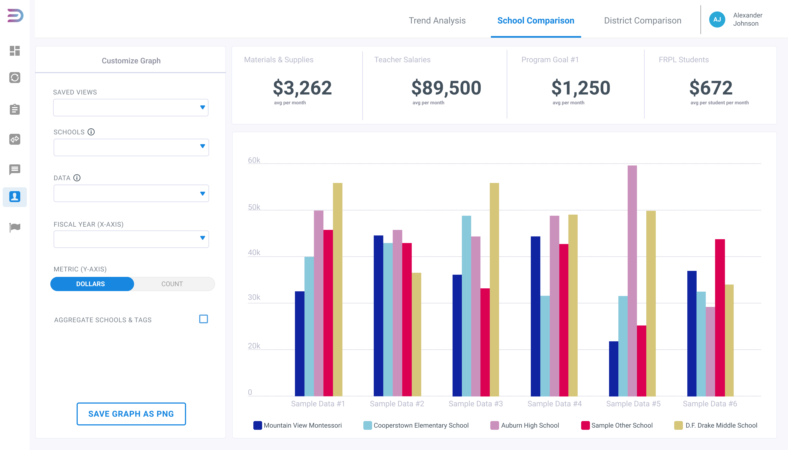
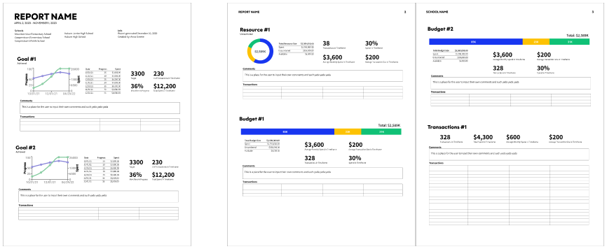
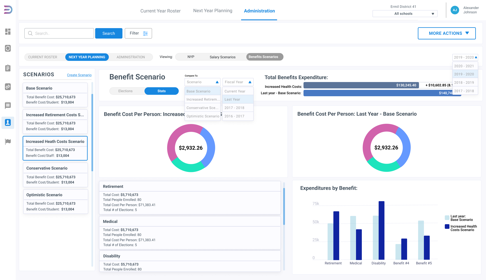
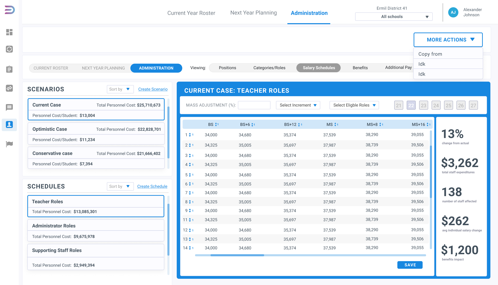

EDSTRUMENTS
Year
2021 - present
2021 - present
Skills
UI & UX Design
Wireframing
Data Visualization
UI & UX Design
Wireframing
Data Visualization
Tools
Python
Figma
Python
Figma
Edstruments is an early-stage startup focused on adding new analytics and features to their product at a fast pace. As the first in-house designer, I was responsible for creating new components and pages and updating existing designs in Figma to be implemented by the dev team. In order to design the variety of features Edstruments has implemented or updated over the past year I did a competitive analysis of other edtech and budgeting software companies; collaborated with the CEO on direction and parameters; defined design objectives for each component; and brainstormed user flow.

Analytics Dashboard
This dashboard was a major project of mine, as Edstruments’ selling point is that it offers users easy to digest and easy to share analytics on their school district data. I used the previous design of the dashboard, pictured on right, as a jumping off point for the current design.

This dashboard was a major project of mine, as Edstruments’ selling point is that it offers users easy to digest and easy to share analytics on their school district data. I used the previous design of the dashboard, pictured on right, as a jumping off point for the current design.
I reorganized the layout of the page to allow for clearer usability and cleaner visual appeal. With all customization options moved to the left and precisesly labled, the user is better able to focus on the data they came to the dashboard to view. Spacing and shadows have all been fixed, and I worked with the CEO to identify unneccesary elements, such as the search bar, and identify missing essential componenents a user would need, such as most of the elements. I also opted to add in summary statistics to the dashboard to give the user a more holistic picture of their data. Finally, I took an iterative and research-based approach to designing the bar chart to both fit in with Edstruments’ existing branding and show off the data to a non-data savy user.

Data Report
Another project I designed was a report generating tool and its output. For this project, I was given the graphics to be used in the report and a list of data points to incorporate. As the designer, I was responsible for the layout, typography, and sizing. My biggest challenge was arranging all of the various statistics in a manner that was not overhwhelming to the user. An additionally challenge was choosing typography and a report asthetic that fit in with the Edstruments brand but was also appropriate for a more traditional analog report format.

Another project I designed was a report generating tool and its output. For this project, I was given the graphics to be used in the report and a list of data points to incorporate. As the designer, I was responsible for the layout, typography, and sizing. My biggest challenge was arranging all of the various statistics in a manner that was not overhwhelming to the user. An additionally challenge was choosing typography and a report asthetic that fit in with the Edstruments brand but was also appropriate for a more traditional analog report format.
Conclusion
A common theme of my work with Edstruments was fitting a lot of information into a small space. I had to think creatively and very intentionally about color, spacing, and sizing in order to make all of the information fit but still be digestable. Data visualization decisions were also my responsibility, as I was given creative freedom to decide the best way to display the given data. Need to say something here about how important my work was because I did alot of the analytics and data visualizations, which are the snazzy attention grabbing part of the product that set it apart from competitors.
A common theme of my work with Edstruments was fitting a lot of information into a small space. I had to think creatively and very intentionally about color, spacing, and sizing in order to make all of the information fit but still be digestable. Data visualization decisions were also my responsibility, as I was given creative freedom to decide the best way to display the given data. Need to say something here about how important my work was because I did alot of the analytics and data visualizations, which are the snazzy attention grabbing part of the product that set it apart from competitors.

